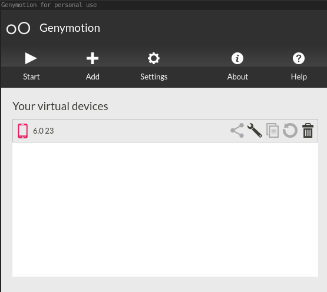
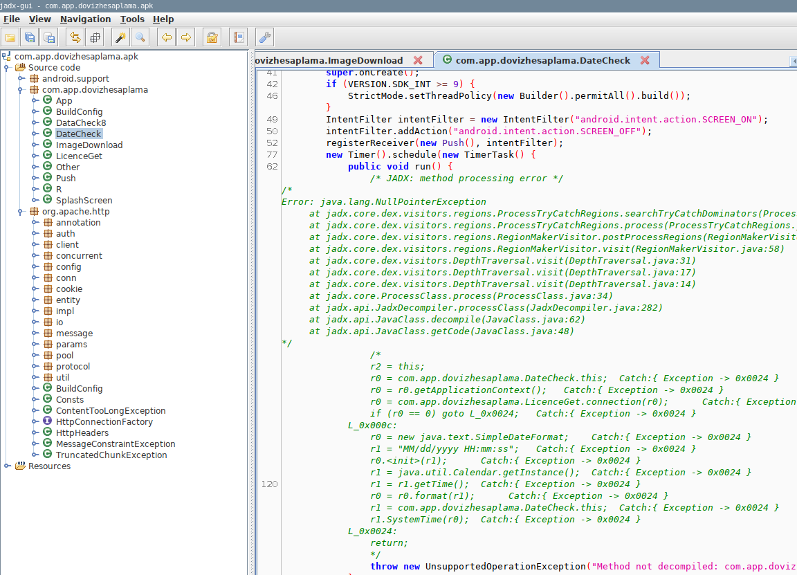
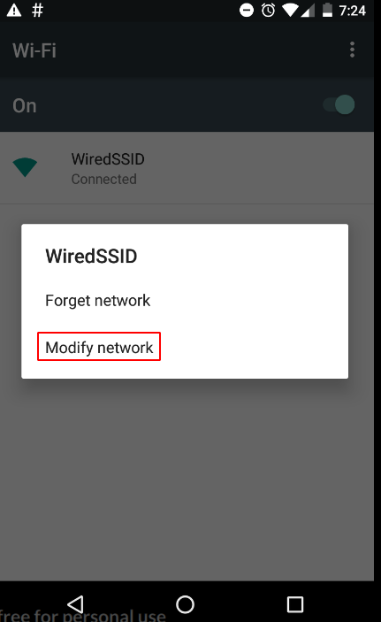
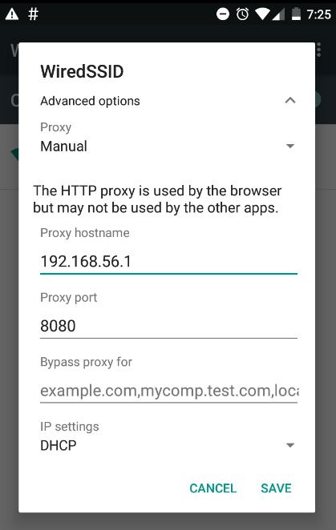
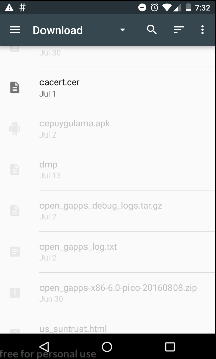
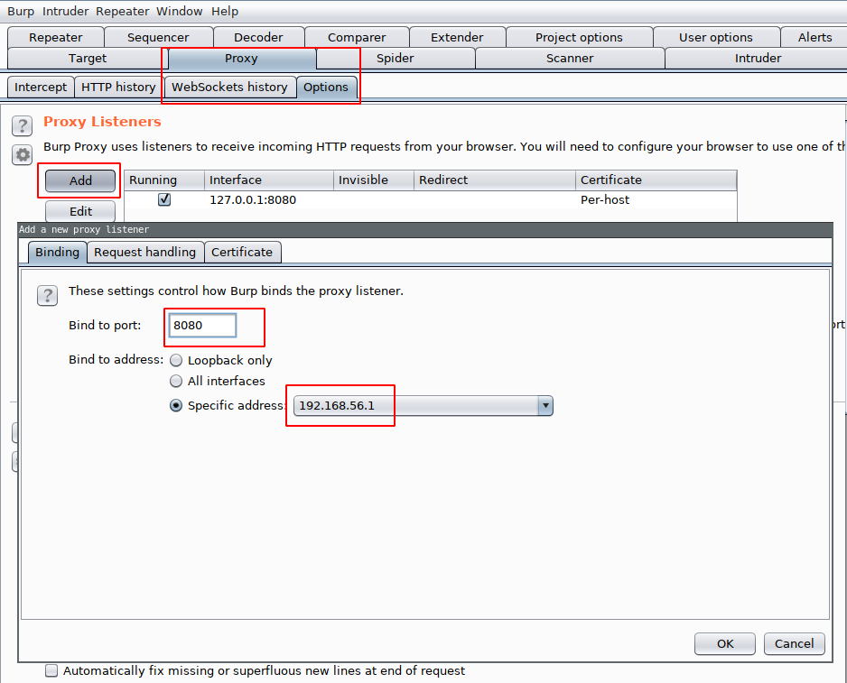

Mobil Zararlı Analizi - Bölüm 1: Ortamı Kuralım
Bu seride mobil zararlı analizine yeni başlayanlar için bir rehber oluşturmaya çalışacağım. Serinin diğer yazılarında örnek zararlı analizi yapmayı düşünmekteyim. Bu yazımda analiz için ortamı kurmayı ve kullanacağım toolları anlatmaya çalıştım. Yazıyı 4 bölüme ayırabiliriz.
- Ortam
- Toollar
- VM Hardening
- Zararlı bulma
Ortam
Analiz ortamı için bir android emulator kullanmamız gerek. Birçok alternatif olmakla birlikte ben genymotion kullanıyorum. Performans olarak Android Studio’nun emulatorunden bir tık daha iyi ve biricik Fridamı çok rahat bir şekilde çalıştırabilmekte.
Genymotion kurulumu için https://www.genymotion.com/fun-zone/ adresine giderek trial’ınızı başlatabilirsiniz. Trial bittikten sonra telefona sms yollama, arama yapma gibi birkaç özellikler gidiyor. Çokta mühim bir değişiklik değil.
Yükleyip giriş yaptıktan sonra şu görüntü ile karşılacaksınız.

Add butonuna basarak sanal makine ekleyebilirsiniz. Ben Custom Phone-6.0-API 23-768x1280‘ı kurdum. Şimdi sırayla aşağıdaki dosyaları emulatorümüze tutup atıyoruz :
- 1_Genymotion-ARM-Translation_v1.1
- 2_open_gapps-x86-6.0-pico-20180731
- 3_SuperSU-v2.46
- 4_xposed-v89-sdk23-x86
- 5_XposedInstaller_3.1.5
- 6_mobi.acpm.inspeckage_v9_4c7fe1
https://vimeo.com/156745941 Şu videoda nasıl yüklendiğini görebilirsiniz. Videoda dosyalar android 5.0 için seçilmiş, ancak biz 6.0 yükleyeceğimiz için benim size verdiğim dosya linkleri farklı. Frida genymotionda 6.0dan önce çalışmadığından ötürü 6.0 versiyonunu kullanıyoruz.
Bu işlemlerden sonra emulatörümüz hazır oldu sayılır.
Toollar
Inspeckage
Yukarıda yüklediğimiz inspeckage dinamik analiz için kullanışlı bir tool. Belirli fonksiyonları hooklayarak analiz edilen uygulamanın hangi fonksiyonları çağırdığını otomatik olarak size bildirmekte. Örneğin bir AES encryption yapıyorsa size hangi key ile neyi encrypt ettiğini web arayüzündeki Crypto sekmesinde size göstermekte.
jadx
Jadx yükleyeceğimiz apkları decompile etmede kullanılan bir tool. Android uygulamalar java ile yazıldığı için decompile işlemi genelde sıkıntısız bir şekilde yapılabilmekte. jadx-gui sample.apk komutu ile apkyı inceleyebilirsiniz. Bazen jadx decompile işleminde başarısız oluyor. Örnek

Bu gibi durumlarda apkımızın içindeki dex dosyasını jar’a çevirerek koda ulaşabiliriz. Apklar aslında bildiğimiz zip dosyasıdır. Uzantısını zip’e çevirerek içindeki dosyaları görebilirsiniz. Zip içindeki classes.dex bizim decompile etmeye çalıştırdığımız kodu barındırır. https://github.com/pxb1988/dex2jar tool’u ile bu dex dosyasını jar’a çevirebiliriz.
d2j-dex2jar.sh /path/to/classes.dex komutu ile classes.dex2jar.jar dosyamızı elde ederiz. Bu dosyayı herhangi bir jar dosyası okuyan program ile açabilirisiniz. Hatta bu dosyayı tekrar jadx ile de açabilirsiniz. Ama bu şekilde açtığınızda apk’nın içinde bulunan diğer dosyaları göremezsiniz. AndroidManifest.xml , resource gibi dosyaları.
Frida
Benim kalbimde ayrı bir yeri olan Dynamic instrumentation toolkit https://frida.re
Fridayı çalıştırabilmemiz için telefonda bir adet frida serverımızın hali hazırda çalışıyor olması gerekiyor. Genymotiondaki sanal makineler x86 tabanlı oldugu için https://github.com/frida/frida/releases adresinden en güncel fridaserver-android-x86’yı indiriyoruz. adb push fridaserver /data/local/tmp ile emulatore yolluyoruz. adb shell ile emulatorumuzun içine giriyoruz. cd /data/local/tmp diyerek dosyayı attığımız klasore gidiyoruz. chmod verdikten sonra serverımızı çalıştırıyoruz
Ardından kendi bilgisayarımızda pip install frida-tools frida ile fridayı yüklüyoruz. Yüklendikten sonra frida-ps -U diyerek telefonda çalışan uygulamaların listesini görebilirsiniz.
Ne yapar frida ? Mesela DKHOS’ta çözdüğüm bir mobil sorusundan örnek https://github.com/eybisi/DKHOS/blob/master/MOBILE400.md . Frida android’e özel bir tool da değil. IOS, windows, linux her yerde çalışan bir tool. Örneğin IOSta çalışan bir uygulama için, sistemdeki bluetooth fonksiyonlarını hooklayarak, uygulamanın bluetooth protokölü ile hangi datayı yollayıp aldığını görebilirsiniz.
Serinin ilerleyen yazılarında zararlı analizi kısımlarında bol bol yer vericem frida’ya.
Burp
Zararlılarımızın çoğu komuta kontrol sunucuları ile iletişim kuracağı için bir network proxy çok işimize yarayacak. Emulatorümüze burp kurmak için, önce wifi ayarlarına gidiyoruz.

Ardından Modify network e basarak aşağıdaki ekrana bilgileri giriyoruz. Genymotiondaki sanal makineler default olarak 192.168.56.1 ip adresini kullanmakta.

Şimdi burp sertifikamızı telefona yüklememiz gerekiyor. http://burp adresine gidip sertifikayı indirirken telefonun browserı çöktüğü için bu işi manuel yapacağız. Kendi web browserınıza proxy ayarı çekip, burp sertifikanızı indirin. Sertifikanın uzantısını .cer’e çevirin. adb push /path/to/cert.cer /storage/emulated/0/Downloads komutu ile emulatore sertifikayı yollayın. Ardından telefonun Settings kısmından sırayla Security->Install From SD Card diyip sertifikayı yüklediğiniz klasore gidin.

Kurmak için pin ayarlamınızı isteyecek.
İşlemi yaptıktan sonra burpte proxy ayarlarına gidip 192.168.56.1 : 8080 i ekleyin

Artık emulatordeki HTTP ve WebSocket isteklerini burpten görebilirsiniz.
VM Hardening
Bu kısımı emulator ve root detection yapan zararlılar için anlatacağım. Çoğu zararlı emulatorde çalışıp çalışmadığını anlamak için build.props dosyasındaki keylere bakar. Bizde bu dosyadaki değerleri değiştirerek bu detectiondan kurtulabiliriz. Bunun için öncelikle /system klasorunu writeable yapmamız lazım. adb shell ile bağlandıktan sonra sudo su diyoruz. Ardından mount -o remount,rw /system diyerek /system klasorunu rw yapıyoruz. adb pull /system/build.prop diyerek dosyamızı çekiyoruz. Değişiklikleri yaptıktan sonra adb push build.prop /system/build.prop ile tekrar dosyamızı yerine koyuyoruz. Örneğin benim emulatorumdeki prop dosyam build.prop Bunun dışında sistemdeki binary dosyaları kontrol eden zararlılar da olabiliyor. Bunlar için en güzel yöntem frida. Kontrol ettikleri fonksiyonları bulmanız ile scripti yazmanız 2 dknızı almaz.
Zararlı bulma
Twitterdaki yabancı abilerimiz örnek buldukça paylaşmakta. @virqdroid https://koodous.com adında muhteşem bir site var. Kendiniz rule yazarak siteye yüklenen apklar içinde zararlı bulabilirsiniz. Yakın zamanda apklab.io sitesi açılacak orası da efsane olucak gibi.